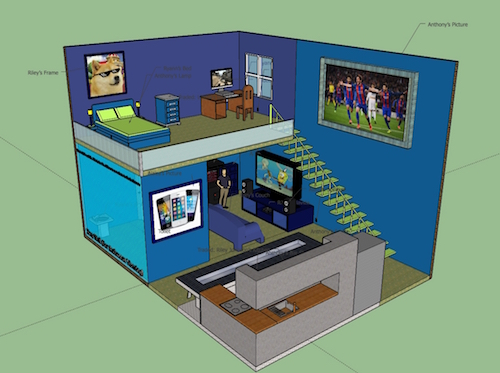

ATM Page
ATM stands for Applied Technology Magnet and is a three year program that goes from 6th grade to 8th grade. ATM teaches advanced technical skills and uses different programs on the computer. ATM prepares kids for other advanced technology classes and for future careers. In 6th Grade you learn about how to use Google Programs such as Docs and Slides. You also learn how to make infographics and much more. In 7th you learn about computer graphics using programs such as Photoshop and Illustrator. You also then learn computer added drafting or CAD and use programs such as Floorplanner and SketchUp. In 8th grade you learn how to make video creations in IMovie, create music in garageband and also code websites in HTML or CSS. You also learn WebDesign and 3D printing. Throughout the program you practice become a faster and more accurate typer.
| 6th Grade Learning | 7th Grade Learning | 8th Grade Learning |
|---|---|---|
| Typing | Javascript | HTML (coding website) |
| Google Documents/Microsoft Word | Photoshop | CSS (coding website) |
| Coded Drawing | Illustrator | Soon to learn: Garageband |
| Google Slides | Indesign | Soon to learn: IMovie>My First Webpage |
| Excel Sheets | SketchUp/Floorplanner | Soon to learn (in semester two): 3D printing |
6th Grade Learning Projects
Bangkok, Thailand PowerPoint7th Grade Learning Projects

8th Grade Learning
Website I Created in Dash